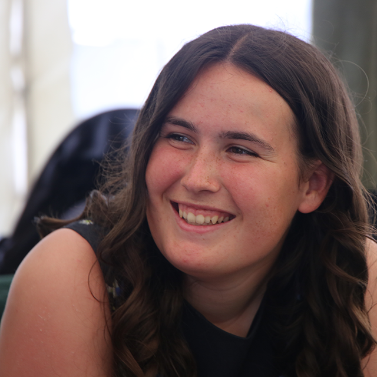
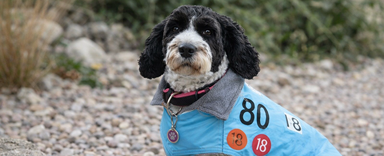
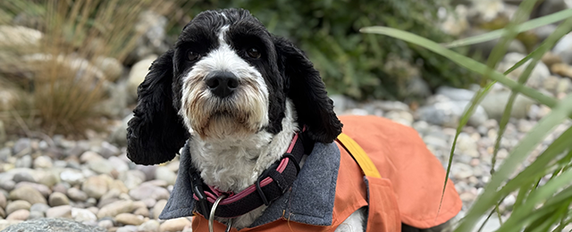
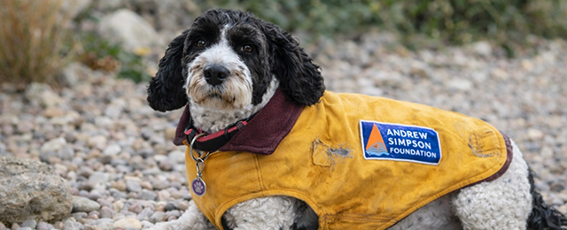

Handmade in Hampshire
Every Tide & Tails coat is handmade from a retired dinghy sail - giving old sails a new life, and your four-legged crew member a warm, waterproof, one-of-a-kind coat.

The Story Behind the Coat
Tide & Tails started simply : retired sailing sails pile up behind every sailing club around the world, destined for landfill. Meanwhile, dogs on the Solent are getting rained on. Something had to be done.
Every coat is handmade from sails sourced locally from around the Solent. The fleece lining? Upcycled too. No new fabric. No waste. Just a warm, weatherproof coat with a proper story behind it.
The race patches stay on. Because every sail has been somewhere, and every dog deserves a coat with history.
We source only retired sails from local sailing clubs and charities. Each sail has raced, competed, and weathered real conditions which is exactly what your dog needs too.
No new fabric is ever bought. The outer layer is recycled sail. The inner fleece lining is upcycled from donated clothing.
The harness-style fit goes under the chest for proper warmth and security. It stays on. It moves with your dog. It was tested by Moose (see photos), who approved it immediately.
The Collection
Each coat is one of a kind: once it's sold, that exact sail panel is gone forever. No two coats are ever alike.

Sail origin: Stokes Bay SC windsurfer - circa 2018
A striking pale-blue outer in a sturdy windsurfer sail, with a soft grey fleece lining. Retains the original sail number and two race marks from the 2018 season. Windproof, splash-resistant, and very handsome.

Sail origin: TS Hornet Topper - CadetTraining Sail
Thin, flexible Topper sail fabric in warm orange, lined with a grey fleece. The training sail has helped numerous cadets learn to sail for over 20 year: a genuine piece of local sailing history.

Sail origin: Andrew Simpson Foundation - sail bag
A gorgeous warm-yellow training sail from the Andrew Simpson Foundation, lined in mustard fleece. Worn, patched, and full of character — this one went to a very lucky Labrador in Fareham.
The Process
From the boathouse to your dog in four steps each one as sustainable as the last.
Retired sails are collected from local sailing clubs around the Solent Nothing is bought new. Every sail has already had a life on the water.
The inner fleece lining is upcycled from donated jumpers and fleeces. Soft, warm, and waste-free. Each coat's lining is as unique as its outer layer.
Each coat is hand-cut using a tried-and-tested pattern, adapted for different dog sizes. Sail material is tough but with the right needle and technique, it sews beautifully.
Fitted with Velcro straps, a protective collar, and a chest panel for real warmth. Then tested by real dogs (Moose approves) before it ever reaches yours.
"A coat made from a sail that once raced at Stokes Bay, lined with upcycled fleece, keeping a dog warm on a windy day on the Solent. That is exactly the thing I set out to make." — Evelyn, Founder of Tide & Tails
Made Just For You
Have a favourite old sail you'd like made into something lasting? Or want a coat made to your own dog's exact measurements? We offer bespoke commissions - just get in touch.